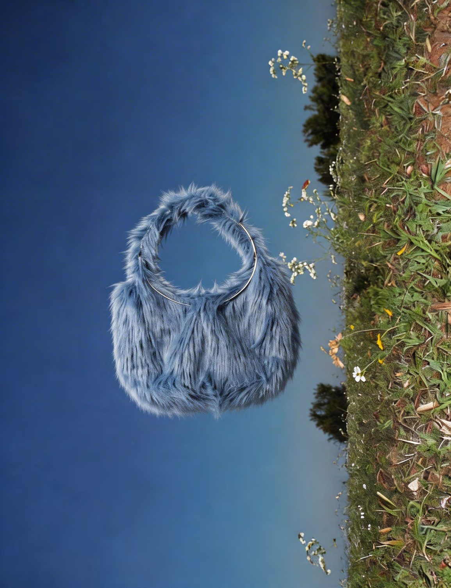

01
MSSDIARY — AI FASHION CAMPAIGN
Creative Direction / AI Visual & Video Content
Creative direction for a fashion accessories campaign: AI-generated visuals and promo video for social media, and a visual identity blending fashion aesthetics with generative imagery — from concept to final execution.
Dirección creativa de una campaña de accesorios de moda: visuales y vídeo promocional generados con IA para redes, y una identidad visual que mezcla estética de moda con imagen generativa, del concepto a la ejecución final.
- Higgsfield
- Kling 3.0
- Nano Banana
- Premiere Pro